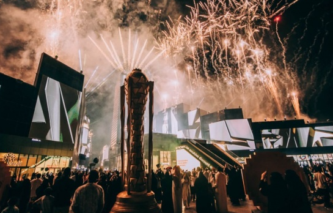
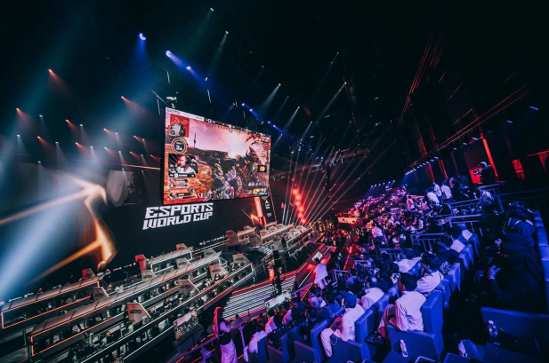

Главный геймерский турнир на $ 70 млн. Всё про Кубок мира по киберспорту
09:36 / 12.05.2026 / world cup

Почти два месяца непрерывных баталий за престижный титул и рекордные призовые.
7 июля в Эр-Рияде стартует Esports World Cup 2025 — киберспортивный фестиваль невероятных масштабов, который негласно называют «Олимпиадой для геймеров». В течение семи недель столица Саудовской Аравии примет 25 турниров по популярным играм, более 1000 кибератлетов разыграют более $ 70 млн призовых.
В преддверии Кубка мира по киберспорту «Чемпионат» подготовил для вас краткий путеводитель по турниру, который поможет вам следить за главными событиями EWC и не пропустить самые важные детали крупнейшего ивента сезона.
Дисциплины и расписание Esports World Cup 2025
По сравнению с прошлым годом, программа Esports World Cup выросла до 24 дисциплин. Помимо популярных Dota 2, Counter-Strike 2 и League of Legends, в Эр-Рияде пройдут чемпионаты по шутеру CrossFire, файтингу Fatal Fury: City of the Wolves, автобатлеру Teamfight Tactics и многим другим играм.
На Кубке мира впервые состоятся соревнования по Valorant и шахматам — на EWC выступят лучшие гроссмейстеры мира при поддержке киберспортивных клубов. А по Mobile Legends пройдут сразу два турнира, мужской и женский.
При этом ряд турниров имеют важнейшее значение в своих дисциплинах. Вот только некоторые:
Dota 2 — один из двух крупнейших турниров сезона наравне с The International;
EA Sports FC 25, Honor of Kings — чемпионат мира по игре;
Overwatch, MLBB, Apex Legends, PUBG Mobile — второй по значимости турнир после ЧМ.
В каждой дисциплине будет разыграно от $ 500 тыс. до $ 3 млн, что станет одним из самых больших призовых в сезоне. Для беднеющего StarCraft II или скромной Tekken 8 это огромный подарок и важнейший ивент в году, пусть даже он не носит статус чемпионата мира.

Параллельно на Esports World Cup 2025 будут идти по четыре-шесть турниров — каждую неделю организаторы планируют проводить три-четыре финала плюс предварительные соревнования.
В конце августа в Эр-Рияде также пройдёт Mid-Season Championship по королевской битве The NARAKA: BLADEPOINT, официально не входящей в программу фестиваля.